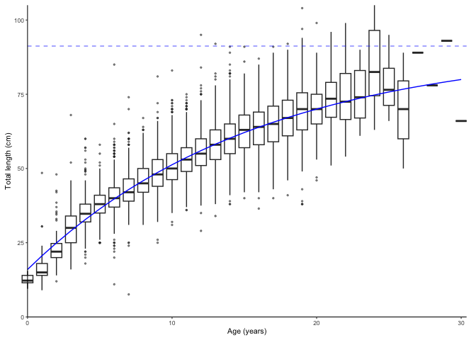
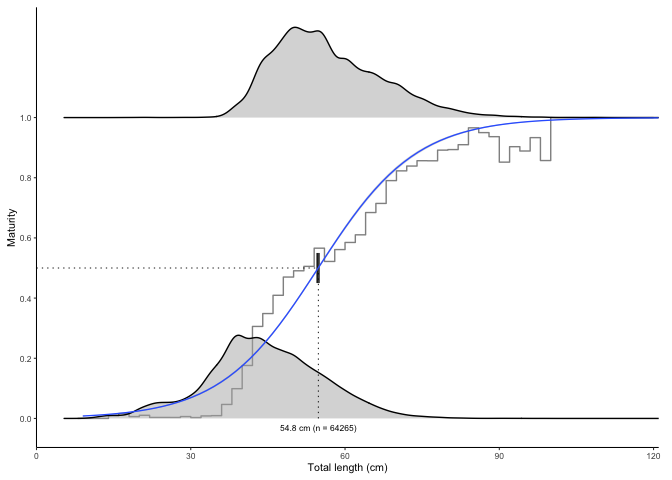
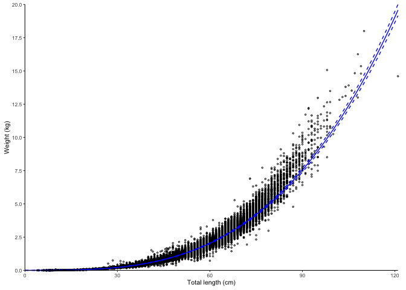
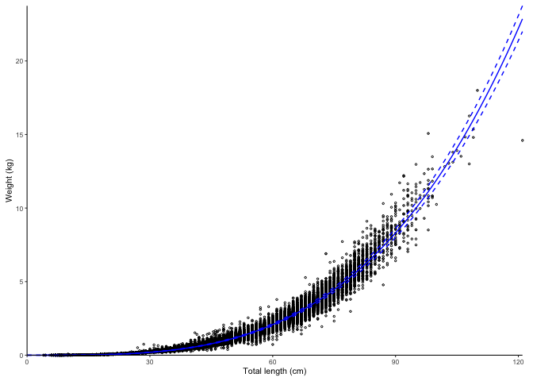
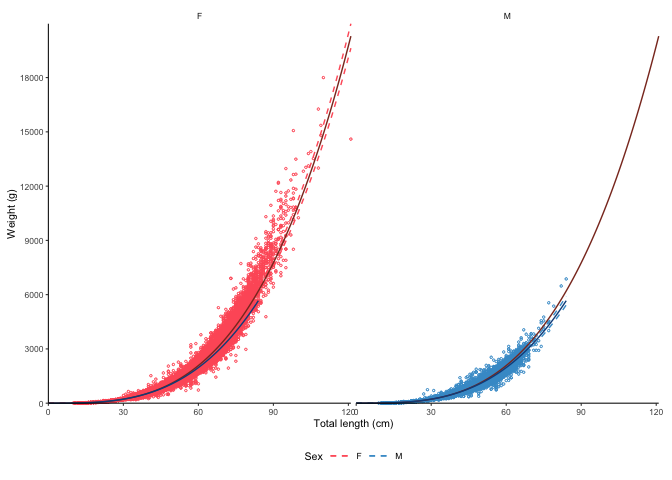

Visualise and calculate life history parameters for fisheries science using ggplot2. R package version 0.2.3
Overview
The ggFishPlots package for R allows quickly plotting and calculating life history parameters required by stock assessment models. The package uses ggplot2 for plotting and the tidyverse packages for calculations.
The ggOceanMaps package has been developed by the Institute of Marine Research. Note that the package comes with absolutely no warranty. Any bug reports and code fixes are warmly welcomed. See Contributions for further details.
If you are looking for other similar packages, make sure to check out the AquaticLifeHistory and FSA packages, as well as the FishR webpage.
Installation
The package most up to date version of the package can always be found from GitHub. If the CRAN version does not work as shown in shown in the examples on this website, try installing the GitHub version. You can do this by using the devtools or remotes packages.
devtools::install_github("DeepWaterIMR/ggFishPlots")Usage
At the time of writing, the package produces four kinds of plots: growth curves, maturity plots, length-weight relationships, and catch curves. Each function returns a ggplot2 plot and the estimated parameters as a text string that can be used in Rmarkdown and Shiny applications as well as a data frame for further use of the parameters. The elements are returned as a list. The package contains example data to illustrate the functionality.
Growth curves
Note how the text and params are returned as a list together with plot.
library(ggFishPlots)
data(survey_ghl) # example data
head(survey_ghl)
#> # A tibble: 6 × 5
#> age sex length weight maturity
#> <dbl> <chr> <dbl> <dbl> <int>
#> 1 NA <NA> 35 NA 0
#> 2 NA <NA> 43 NA 0
#> 3 NA <NA> 51 NA 0
#> 4 NA <NA> 31 NA 0
#> 5 NA <NA> 32 NA 0
#> 6 NA <NA> 32 NA 0
plot_growth(survey_ghl, length = "length", age = "age")
#> $plot
#>
#> $text
#> [1] "von Bertalanffy growth function coefficients: \n Linf (asymptotic average length) = 91.2 cm +/- 88.3 - 94.6 (95% CIs) \n K (growth rate coefficient) = 0.0633 +/- 0.059 - 0.068 (95% CIs) \n t0 (age at length 0) = -3.04 (years) +/- -3.337 - -2.769 (95% CIs) \n tmax (life span; t0 + 3/K) = 44.4 years \n Number of included specimens = 10401 \n Total number of measured = 618779 \n Excluded (length or age missing): \n Length = 0; age = 608378"
#>
#> $params
#> # A tibble: 3 × 7
#> term estimate std.error statistic p.value conf.low conf.high
#> <chr> <dbl> <dbl> <dbl> <dbl> <dbl> <dbl>
#> 1 Sinf 91.2 1.51 60.3 0 88.3 94.6
#> 2 K 0.0633 0.00231 27.4 4.90e-160 0.0586 0.0680
#> 3 t0 -3.04 0.139 -21.8 1.71e-103 -3.34 -2.77The text object can be rendered to R markdown documents using the results = 'asis' setting in the code chunk header (i.e. {r, results = 'asis'}) and the cat() function after replacing "\n" by "\ n":
htmlcat <- function(text){
cat(gsub(pattern = "\n", replacement = " \n", x = text))
}
htmlcat(plot_growth(survey_ghl)$text)von Bertalanffy growth function coefficients:
Linf (asymptotic average length) = 91.2 cm +/- 88.3 - 94.6 (95% CIs)
K (growth rate coefficient) = 0.0633 +/- 0.059 - 0.068 (95% CIs)
t0 (age at length 0) = -3.04 (years) +/- -3.337 - -2.769 (95% CIs)
tmax (life span; t0 + 3/K) = 44.4 years
Number of included specimens = 10401
Total number of measured = 618779
Excluded (length or age missing):
Length = 0; age = 608378
Split by sex
Specifying length, age and sex arguments have been omitted since they are the argument names by default and the same than in the example data. Only the plot element is returned this time.
plot_growth(survey_ghl, split.by.sex = TRUE)$plot
The dashed lines are Sinf. Data behind the growth curves are shown as box plots by default. It is possible to plot the data as points by defining boxplot = FALSE. We can also force zero group into the curves if know the length of it. Assumed as 14 cm here. Zero group forcing strength is 10 % of number of observations by default and can be adjusted using the force.zero.group.strength argument.
plot_growth(survey_ghl, force.zero.group.length = 14, boxplot = FALSE)$plot
Maturity plots
L50 plots
Maturity ogives are estimated using a logistic (family = binomial(link = "logit")) glm()
plot_maturity(survey_ghl, length = "length", maturity = "maturity")
#> $plot
#>
#> $text
#> [1] "50% maturity at length (L50) based on logit regressions:\n54.784 cm. 95% confidence intervals: 52.852 - 56.787\n Number of specimens: 64265.\n Confidence intervals estimated from the glm object."
#>
#> $params
#> mean ci.min ci.max sex intercept slope n
#> 1 54.78361 52.85249 56.787 both -5.755492 0.1050587 64265The error bars represent 95% confidence intervals calculated from the model object using the confint() function and back-transformed to the original scale. The grey stepped line is a binned average defined using the length.bin.width argument.
The function also contains an option to bootstrap the confidence intervals (CIs) which will produce narrower CIs. Bootstrapping is probably a more correct way of estimating CIs in this application. Using only 10 replicates here to save processing time. In real application use at least 1000.
plot_maturity(survey_ghl, bootstrap.n = 10)
#> $plot
#>
#> $text
#> [1] "50% maturity at length (L50) based on logit regressions:\n54.754 cm. 95% confidence intervals: 54.674 - 54.818\n Number of specimens: 64265\n\n Confidence intervals estimated using 10 bootstrap replicates."
#>
#> $params
#> mean ci.min ci.max sex intercept slope n
#> 1 54.75423 54.67441 54.81768 both -5.755492 0.1050587 64265
A50 plots
The same principle can be used to produce A50 (50% maturity at age) plots:
plot_maturity(survey_ghl, length = "age", length.unit = "years",
xlab = "Age", length.bin.width = 1, split.by.sex = TRUE)$plot
Addition of juveniles
Also the plot_maturity() function has the option to add juveniles (zero group fish). The addition of juveniles can be necessary for to make the glm() to converge if small immature fish are scarce in the dataset.
plot_maturity(survey_ghl, length = "age", length.unit = "years",
xlab = "Age", length.bin.width = 1,
force.zero.group.length = 0,
force.zero.group.strength = 100,
split.by.sex = TRUE)$plot
Note how the addition increases the estimate for males because the dataset did not contain a sufficient number of young males which the number of females seems sufficient because females mature older in this species.
One option can be to estimate the number of added juveniles using the plot_catchcurve() function:
plot_maturity(survey_ghl, length = "age", length.unit = "years",
xlab = "Age", length.bin.width = 1,
force.zero.group.length = 0,
force.zero.group.n = c("F" = exp(11.363), "M" = exp(11.885)),
split.by.sex = TRUE)$plot
Length-weight relationships
Log-linearized models
Simple plot using log-transformation and linear models by default.
plot_lw(survey_ghl, length = "length", weight = "weight")
#> $plot
#>
#> $text
#> [1] "Logarithm transformed linear length-weight model. Not splitted by sex: \n a = 0 +/- 0 - 0 (95% CIs). \n b = 3.221 +/- 3.22 - 3.22 (95% CIs). \n Number of included specimens = 67457 \n Total number of measured = 618779 \n Excluded (data missing): \n Length = 0; weight = 551322"
#>
#> $params
#> # A tibble: 2 × 7
#> term estimate std.error statistic p.value conf.low conf.high
#> <chr> <dbl> <dbl> <dbl> <dbl> <dbl> <dbl>
#> 1 a 0.00000382 0.00491 -2540. 0 0.00000379 0.00000386
#> 2 b 3.22 0.00128 2519. 0 3.22 3.22The dashed lines represent 95% confidence intervals.
Non-linear least square models
Use non-linear least squares instead:
plot_lw(survey_ghl, use.nls = TRUE)
#> $plot
#>
#> $text
#> [1] "Nonlinear least squares length-weight model. Not splitted by sex: \n a = 0 +/- 0 - 0 (95% CIs). \n b = 3.419 +/- 3.42 - 3.42 (95% CIs). \n Number of included specimens = 67457 \n Total number of measured = 618779 \n Excluded (data missing): \n Length = 0; weight = 551322"
#>
#> $params
#> # A tibble: 2 × 7
#> term estimate std.error statistic p.value conf.low conf.high
#> <chr> <dbl> <dbl> <dbl> <dbl> <dbl> <dbl>
#> 1 a 0.00000173 0.0000000156 110. 0 0.00000170 0.00000176
#> 2 b 3.42 0.00215 1590. 0 3.42 3.42Split by sex
The decimal point of a and b estimates depends on the length and weight units. FishBase uses centimeters and grams. The function can correct for the units when asked (but length.unit and weight.unit parameters have to be defined correctly).
plot_lw(survey_ghl, split.by.sex = TRUE, correct.units = TRUE)
#> $plot
#>
#> $text
#> [1] "Logarithm transformed linear length-weight model for females and males, respectively: \n a = 0.0035 +/- 0.003 - 0.004 (95% CIs) and 0.0051 +/- 0.005 - 0.005 (95% CIs). \n b = 3.247 +/- 3.24 - 3.25 (95% CIs) and 3.143 +/- 3.14 - 3.15 (95% CIs). \n Number of included specimens = 34889 and 30354 \n Total number of measured = 618779 \n Excluded (data missing): \n Length = 0; weight = 456891; sex = 96645"
#>
#> $params
#> # A tibble: 4 × 8
#> sex term estimate std.error statistic p.value conf.low conf.high
#> <chr> <chr> <dbl> <dbl> <dbl> <dbl> <dbl> <dbl>
#> 1 F a 0.00350 0.00765 -739. 0 0.00344 0.00355
#> 2 F b 3.25 0.00195 1666. 0 3.24 3.25
#> 3 M a 0.00507 0.0101 -525. 0 0.00497 0.00517
#> 4 M b 3.14 0.00265 1188. 0 3.14 3.15You can also transform the parameters according to the formulas given in the FishBase.
plot_lw(survey_ghl %>% dplyr::mutate(weight = weight*1000), weight.unit = "g")$params
#> # A tibble: 2 × 7
#> term estimate std.error statistic p.value conf.low conf.high
#> <chr> <dbl> <dbl> <dbl> <dbl> <dbl> <dbl>
#> 1 a 0.00382 0.00491 -1133. 0 0.00379 0.00386
#> 2 b 3.22 0.00128 2519. 0 3.22 3.22
Catch curves to estimate instantaneous total mortality (Z)
Catch curves were added to the version 0.2.3 and may not be available in the CRAN version. A FishR tutorial written by Ogle (2013) contains a nice explanation of catch curves. At the time of writing ggFishPlots calculates only the simple log-linearised regression.
plot_catchcurve(survey_ghl)
#> $plot
#>
#> $text
#> [1] "Instantenous total mortality (Z) estimated using a catch curve and\nage range .\n\nZ = 0.19 (0.123-0.257 95% CIs)\nN at age 0 = 1448 (449-4674 95% CIs)\nLongevity = 38.3 (23.8-68.8 95% CIs)\n\n"
#>
#> $params
#> # A tibble: 2 × 8
#> sex term estimate std.error statistic p.value conf.low conf.high
#> <chr> <chr> <dbl> <dbl> <dbl> <dbl> <dbl> <dbl>
#> 1 both (Intercept) 7.28 0.573 12.7 2.25e-13 6.11 8.45
#> 2 both age -0.190 0.0328 -5.79 2.85e- 6 -0.257 -0.123The ages to be included to the Z estimation can be adjusted using the age.range argument.
plot_catchcurve(survey_ghl, age.range = c(10,26))$plot
In the plot above, -b is Z (i.e. Z = 0.356) and exp(a) (i.e. 68391) is the number of 0 age fish assuming constant mortality.
Split by sex
plot_catchcurve(survey_ghl, age.range = c(10,26), split.by.sex = TRUE)$plot
Use a named list to use separate age ranges for females and males.
tmp <- plot_catchcurve(survey_ghl,
age.range = list(female = c(13,26), male = c(10,26)),
split.by.sex = TRUE)
tmp$plot
htmlcat(tmp$text)Instantenous total mortality (Z) estimated using a catch curve and
age range 13-26 for females and 10-26 for males.
Females:
Z = 0.37 (0.31-0.431 95% CIs)
N at age 0 = 86119 (25990-285354 95% CIs)
Longevity = 30.7 (23.6-40.5 95% CIs)
Males:
Z = 0.511 (0.492-0.53 95% CIs)
N at age 0 = 145002 (105241-199785 95% CIs)
Longevity = 23.3 (21.8-24.8 95% CIs)
Citations and data sources
The data used in the package are a property of the Institute of Marine Research and the Norwegian Government. They are distributed under the Creative Commons (CCBY or NLOD) licenses allowing free use as long as the source (IMR) is cited. We ask any user to refer to the package if plots or estimates are used in reports or scientific articles. For up-to-date citation information, please use:
citation("ggFishPlots")
#>
#> To cite package 'ggFishPlots' in publications use:
#>
#> Vihtakari M (2023). _ggFishPlots: Visualise and Calculate Life
#> History Parameters for Fisheries Science using 'ggplot2'_. R package
#> version 0.2.3, <https://github.com/DeepWaterIMR/ggFishPlots>.
#>
#> A BibTeX entry for LaTeX users is
#>
#> @Manual{,
#> title = {ggFishPlots: Visualise and Calculate Life History Parameters for Fisheries Science using 'ggplot2'},
#> author = {Mikko Vihtakari},
#> year = {2023},
#> note = {R package version 0.2.3},
#> url = {https://github.com/DeepWaterIMR/ggFishPlots},
#> }Contributions
Any contributions to the package are more than welcome. Please contact the package maintainer Mikko Vihtakari (mikko.vihtakari@hi.no) to discuss your ideas on improving the package. Bug reports and corrections should be submitted directly to the GitHub site. Please include a minimal reproducible example. Considerable contributions to the package development will be credited with an authorship.